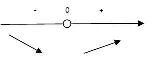
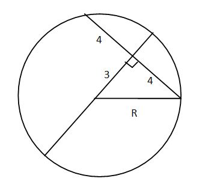

Разложите на простые множители число 420:
А) 420=2⋅3⋅5⋅14Ответ: B
Решение: 420|2 210|2 105|3 35|5 7|7 1| 420=2⋅2⋅3⋅5⋅7
Решите уравнение: |x|=-3x-5
A) -4 B) $-5/2$ C) $61/7$ D) $5$ E) $-5$Ответ: B
Решение:
| |x|=-3x-5 | |
| x=-3x-5 | -x=-3x-5 |
| 4x=-5 | 2x=-5 |
| $x=-5/4$ | $x=-5/2$ |
Решите систему уравнений: $3^{5x+y}=9, 4^(2x-y-3)=16$
А) (-1;3) В) (1;-3) С) (-3;-3) D) (1;1)Е) (-1;-1)Ответ: B
Решение: $$3^{5x+y}=3^2$$ $$4^{2x-y-3}=4^2$$ $$(\table(5x+y=2);+;(2x-5)=5)$$ $$7x=7→x=1$$ $$5x+y=2$$ $$5+y=2→y=-3$$
Решите неравенство |2x-1|<5
A) (-2;3) B) (3;+∞) C) (-2;$1/2$) D) ($1/2;3$) E) (-∞;-2)Ответ: A
Решение: $$|2x-2|<5$$ $$-5<2x-1<5$$ $$-4<2x<6$$ $$-2<x<3$$
Найти область определения функции: $y=log_5(2-3x)$
A) (-∞;$2/3$] B) ($2/3$;+∞) C) (-∞;$2/3$) D) [0;$2/3$] E) (0;$2/3$)Ответ: C
Решение: $ $$2-3x>0$$ $$2>3x$$ $$x<2/3$$
Упростить: cos7α-cos3α
A) 2sin5αcos2α B) 2cos5αsin2α C) 2sin10αsin4α D) -2cos5αcos2α E) -2sinαsin2αОтвет: E
Решение: $$cos7α-cos3α=cos(5α+2α)-cos(5α-2α)=$$ $$=cos5αcos2α-sin5αsin2α-cos5αcos2α-sin5αsin2α$$ $$=-2sin5αsin2α$$
В геометрической прогрессии $в_1=1/6$, $в_2=1/3$. Найдите шестой член этой прогрессии.
A) $1/{384}$ B) $3{5}/9$ C) $1/{192}$ D) $10{2}/3$ E) $5{1}/3$Ответ: B
Решение: $$b_2=b_1q$$ $$1/3=1/6q$$ $$q=1/3:1/6=2$$ $$b_6=b_1q^5$$ $$b_6={1/6}2^5=32/6=16/3=5{1/3}$$
Найдите функцию, обратную данной: $y =√{5+3x}$, x⋝-5
A) $y=x+1/5$ B) $y=5+x$ C) $y=x^2-5$ D) $y=√{5+x^2}$ E) $y=5+x^2$Ответ: B
Решение: $$y=√{5+x}$$ Обратная функция $$x=√{5+y}$$ $$x^2=5+y$$ $$y=x^2-5$$
Площадь диагонального сечения куба, в которой вписан шар, равна $36√2$. Определите поверхность шара, вписанного в куб.
A) 48π $см^2$ B) 54π $см^2$ C) 42π $см^2$ D) 60π $см^2$ E) 36π $см^2$Ответ: C
Решение: $$S_{сечения}=a√2a=36√2$$ $$a^2√2=36√2$$ $$a=6 см$$ $$R_{шар}=6/2=3 см$$ $$S_{шар}=4πR^2=4π3^2=4π9=36π$$
10. Решите уравнение: $3x^2+5x=24-2x-2x^2$
A) -3;1, 6 B) -1,6; 3 C) -3; -1,6 D) -1,6; 3 E) -3; 10Ответ: A
Решение: $$3x^2+5x=24-2x-2x^2$$ $$5x^2+7x-24=0$$ $$x_1=-3, x2=1,6$$
11. Путь в 54 км турист шел пешком 3 ч и ехал на велосипеде 2 ч. Скорость движения на велосипеде в 3 раза больше, чем скорость движения туриста при ходьбе пешком. С какой скоростью турист ехал на велосипеде?
A) 16 км/ч B) 24 км/ч C) 18 км/ч D) 22 км/ч E) 20 км/чОтвет: C
Решение: $$v⋅3+(3v)⋅2=54$$ $$3v+6v=54$$ $$9v=54$$ $$v=6 {км}/ч, 3v=18 {км}/ч$$
12. Решите уравнение: $log_{5}25^x=-3$
A) -1,5 B) $-2/3$ C) $5√5$ D) 1,5 E) $2/3$Ответ: A
Решение: $$log_{5}25^x=-3$$ $$log_{5}5^{2x}=-3$$ $$2x=-3$$ $$x=-1,5$$
Решите систему уравнений: $√{x+3y+5}=2$, $√{2x-y+3}=1$
A) (1;0) B) (-1;0) C) (0;1) D) (25;16) E) (0;-1)Ответ: B
Решение $$x+3y+5=4$$ $$2x-y+3=1$$ $$(\table(x+3y)=-1;+;(2x-y)=-2)$$ $$7x=-7→x=-1$$ $$x+3y=-1$$ $$-1+3y=-1$$ $$3y=0→y=0$$
Решите уравнение: $sin^2x-cos^2x=cos{x/2}$
A) ${2π}/5+{4π}/5n ,n∈Z; {2π}/3+{4π}/3k,k∈Z.$ B) $-{2π}/5+{2π}/3n ,n∈Z; {2π}/3+πk,k∈Z.$ C) нет решений D) ${2π}/5+{2π}/5n, n∈Z; 2π+{3π}/4k,k∈Z.$ E) ${5π}/4+4πn, n∈Z; {2π}/3+πk,k∈Z.$Ответ: A
$$sin^2x-cos^2x=cos{x/2}$$ $$-cos2x=cosx/2$$ $$cos2x+cosx/2=0$$ $$2cos{5x}/4⋅cos{3x}/4=0$$ $$cos{5x}/4=0$$ $${5x}/4=π/2+πn→x={2π}/5+{4πn}/5$$ $$cos{3x}/4=0$$ $${3x}/4=π/2+πk→x={2π}/3+{4πk}/3$$
Найдите производную функции: $f(x)=2x√x-5x^2$
A) $3√x-10x$ B) $3/√x-10$ C) $3/√x-10x$ D) $3√x-5$ E) $3/√x-5$Ответ: C
Решение: $$2x√x-5x^2=2x^{1,5}-5x^2$$ $$f'(x)=3x^{0,5}-10x=3√x-10x$$
16. Найдите наименьшее значение функции $y=e^{2x}-2x$ на интервале (-1;1)
A) 0 B) 1 C) -1 D) -2 E) 2Ответ: B
Решение: $$y=e^{2x}-2x$$ $$y'=2e^{2x}-2=0$$ $$e^{2x}=1$$ 
$$x_min=0$$Сколько сторон имеет правильный многоугольник, если его каждый угол равен 150°?
A) 12 B) 4 C) 5 D) 10 E) 8Ответ: A
Решение: $${(n-2)⋅180°}/n=150°$$ $$180n-360=150n$$ $$30n=360$$ $$n=12$$
В окружности диаметр и хорда взаимно перпендикулярны, причем диаметр делит хорду точкой их пересечения на два равных отрезка по 4 м. А расстояние от точки пересечения диаметра и хорды до центра окружности 3м. Найдите длину окружности.
A) π м. B) 10π м. C) 25π м. D) 5π м. E) 2π м.Ответ: B
Решение: $$r^2=3^2+4^2$$ $$R=5$$ $$C=2πR=10π$$ 
Диагональ прямоугольного параллелепипида равна 25 см, высота 15 см, сторона основания равна 12 см. Найти площадь боковой поверхности параллелепипида.
A) 810 $см^2$ B) 840 $см^2$ C) 800 $см^2$ D) 830 $см^2$ E) 820 $см^2$Ответ: B
Решение: $$d^2=a^2+b^2+c^2$$ $$25^2=15^2+12^2+c^2$$ $$625=225+144+c^2$$ $$c^2=256→c=16$$ $$S_{бок}=P_{осн}h=(16+12)⋅2⋅15=840 см^2$$
Выполнить действия: ${a-2}/{a-3}:({a^2-6a+10}/{a^2-9}+2/{a+3})$
A) a+3 B) ${a-3}/{a-2}$ C) ${a+3}/{a+2}$ D) a-2 E) ${a+3}/{a-2}$Ответ: E
Решение: $${a-2}/{a-3}:({a^2-6a+10}/{(a-3)(a+3)}+2/{a+3})$$ $$={a-2}/{a-3}:({a^2-6a+10}/{(a-3)(a+3)}+{2(a-3)}/{(a+3)(a-3)})$$ $$={a-2}/{a-3}:({a^2-4a+4}/{(a-3)(a+3)})$$ $$={a-2}/{a-3}:({(a-2)^2}/{(a-3)(a+3)})$$ $$={a-2}/{a-3}⋅({(a-3)(a+3)}/{(a-2)(a-2)})$$ $$={a+3}/{a-2}$$
Упростите выражение: ${a-2}/{a^2+2a}: ({a}/{a^2-2a}-{a^2+4}/{a^3-4a}-1/{a^2+2a})$
A) a+3 B) a-2 C) a-4 D) 7-a E) 6a-1Ответ: B
Решение: $${a-2}/{a^2+2a}: ({a(a+2)}/{a(a-2)}-{a^2+4}/{a(a-2)(a+2)}-{(a-2)}/{a(a+2)})$$ $${a-2}/{a^2+2a}: ({a^2+2a-a^2-4-a+2}/{a(a-2)(a+2)})$$ $${a-2}/{a^2+2a}: ({a-2}/{a(a-2)(a+2)})$$ $${a-2}/{a^2+2a}: (1/{a(a+2)})$$ $${a-2}/{a^2+2a}⋅ {a(a+2)}/1$$ $${a-2}/{a(a+2)}⋅ {a(a+2)}/1$$ $$=a-2$$
Решите систему неравенств: tgx>1, sinx> √3/2.
A) $[π/3+2πn; π/2+2πn], n∈Z$ B) $(π/3+πn; π/2+πn), n∈Z$ C) $[π/3+2πn; π/2+2πn), n∈Z$ D) $(π/3+2πn; π/2+2πn], n∈Z$ E) $(π/3+2πn; π/2+2πn), n∈Z$Ответ: A
Решение: $$(π/3+2πn; π/2+2πn)$$
Найдите площадь заштрихованной фигуры:
A) $2{1}/6$ B) 9 C) $3{1}/3$ D) $4{2}/3$ E) 6Ответ: B
Решение: Функция линий:$$ y=m(x-x_1)+y_1$$ $$m={y_2-y_1}/{x_2-x_1}={4-2}/{0-2}=-1$$ $$y=-1(x-0)+4 → y=-x+4$$ $$S= ∫↙0↖2((x+1)^2+1-(-x+4))dx$$ $$S= ∫↙0↖2(x^2-2x+1+1+x-4)dx=∫↙0↖2(x^2-x-2)dx$$ $$S=x^3/3-x^2/2-2x|↙0↖2=(8/3-4/2-4)-0$$ $$S=-{20}/6=-{10}/3=-3{1}/3$$ $$S=3{1}/3$$
Треугольник ABC задан координатами своих вершин: A(-2;1), B(1;7) и С(3;2). Найдите внешний угол при вершине B.
A) $arccos({-8}/{√{145}})$ B) $arccos({13}/{5√{29}})$ C) $arccos({8}/{5√{29}})$ D) $arccos({-13}/{5√{29}})$ E) $arccos({8}/{√{145}})$Ответ: A
Решение: $${BA}↖{→}=(-3,-6), {BC}↖{→}=(2,-5)$$ $$|BA|=√{9+36}=√{45}=3√5$$ $$|BC|=√{4+25}=√{29}$$ $$cosα={{BA}↖{→}⋅{BC}↖{→}}/{{|{BA}↖{→}|}⋅{|{BC}↖{→}|}}$$ $$cosα={-3⋅2+(-6)⋅(-5)}/{3√5⋅√{29}}={-6+30}/{3⋅√{145}}=8/√{145}$$ $$α=arccos8/√{145}$$ Внешний угол β =(180-α), cosβ = cos(180-α)=-cosα $$cosβ = -8/√{145}→β=arccos{-8}/√{145}$$
Числа получены по определённому закону. Какая из таблиц лишняя?
|
|
|
|
|
Ответ: A
Решение: №3, так как во всех остальных верхняя ячейка два раза больше нижней ячейки.